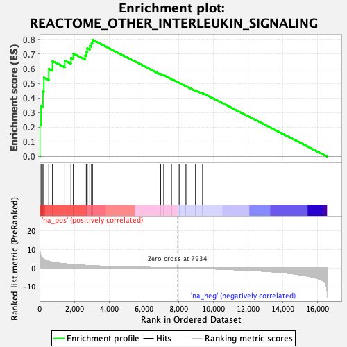

| | | Dataset | DE_genes2 |
| Phenotype | NoPhenotypeAvailable |
| Upregulated in class | na_pos |
| GeneSet | REACTOME_OTHER_INTERLEUKIN_SIGNALING |
| Enrichment Score (ES) | 0.79774815 |
| Normalized Enrichment Score (NES) | 2.4691486 |
| Nominal p-value | 0.0 |
| FDR q-value | 0.0 |
| FWER p-Value | 0.0 |
Table: GSEA Results Summary

Fig 1: Enrichment plot: REACTOME_OTHER_INTERLEUKIN_SIGNALING
Profile of the Running ES Score & Positions of GeneSet Members on the Rank Ordered List
| PROBE | GENE SYMBOL | GENE_TITLE | RANK IN GENE LIST | RANK METRIC SCORE | RUNNING ES | CORE ENRICHMENT | | 1 | IL32 | | | 16 | 10.363 | 0.2162 | Yes |
| 2 | STX3 | | | 85 | 6.367 | 0.3455 | Yes |
| 3 | CSF1R | | | 196 | 5.092 | 0.4455 | Yes |
| 4 | CSF3 | | | 250 | 4.664 | 0.5400 | Yes |
| 5 | IL10RB | | | 530 | 3.638 | 0.5994 | Yes |
| 6 | JAK1 | | | 746 | 3.121 | 0.6518 | Yes |
| 7 | TYK2 | | | 1454 | 2.221 | 0.6555 | Yes |
| 8 | VAMP2 | | | 1806 | 1.911 | 0.6742 | Yes |
| 9 | IL34 | | | 1943 | 1.797 | 0.7037 | Yes |
| 10 | STX4 | | | 2619 | 1.376 | 0.6916 | Yes |
| 11 | STXBP2 | | | 2701 | 1.334 | 0.7147 | Yes |
| 12 | CSF3R | | | 2743 | 1.310 | 0.7396 | Yes |
| 13 | CD4 | | | 2889 | 1.247 | 0.7570 | Yes |
| 14 | SDC1 | | | 2989 | 1.200 | 0.7761 | Yes |
| 15 | IFNLR1 | | | 3041 | 1.179 | 0.7977 | Yes |
| 16 | STX1A | | | 6957 | 0.162 | 0.5640 | No |
| 17 | CSF1 | | | 7141 | 0.127 | 0.5556 | No |
| 18 | IL16 | | | 7583 | 0.052 | 0.5300 | No |
| 19 | CASP3 | | | 8026 | -0.016 | 0.5035 | No |
| 20 | SNAP25 | | | 8417 | -0.079 | 0.4815 | No |
| 21 | PTPRZ1 | | | 8968 | -0.185 | 0.4521 | No |
| 22 | TXLNA | | | 9374 | -0.282 | 0.4335 | No |
Table: GSEA details [plain text format]
Fig 2: REACTOME_OTHER_INTERLEUKIN_SIGNALING: Random ES distribution
Gene set null distribution of ES for REACTOME_OTHER_INTERLEUKIN_SIGNALING